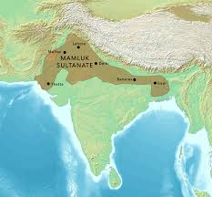
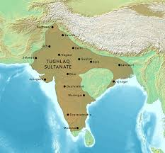
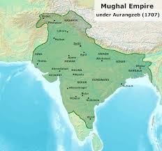
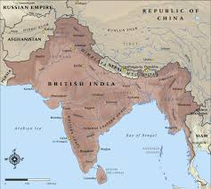

HISTORY
Chandragupta Maurya overthrew the Nanda Empire and established the first great empire in ancient India, the
Maurya
Empire. India's Mauryan king Ashoka is widely recognised for the violent kalinga war and his historical
acceptance
of Buddhism and his attempts to spread nonviolence and peace across his empire. The Maurya Empire would collapse
in
185 BCE, on the assassination of the then-emperor Brihadratha by his general Pushyamitra Shunga. Shunga would
form
the Shunga Empire in the north and north-east of the subcontinent, while the Greco-Bactrian Kingdom would claim
the
north-west and found the Indo-Greek Kingdom. Various parts of India were ruled by numerous dynasties, including
the
Gupta Empire, in the 4th to 6th centuries CE. This period, witnessing a Hindu religious and intellectual
resurgence
is known as the Classical or Golden Age of India. Aspects of Indian civilisation, administration, culture, and
religion spread to much of Asia, which led to the establishment of Indianised kingdoms in the region, forming
Greater India.The most significant event between the 7th and 11th centuries was the Tripartite struggle
centred on Kannauj. Southern India saw the rise of multiple imperial powers from the middle of the fifth
century.
The Chola dynasty conquered southern India in the 11th century. In the early medieval period, Indian
mathematics,
including Hindu numerals, influenced the development of mathematics and astronomy in the Arab world, including
the
creation of the Hindu-Arabic numeral system.
Islamic conquests made limited inroads into modern Afghanistan and Sindh as early as the 8th century,followed by
the invasions of Mahmud Ghazni.The Delhi Sultanate, established in 1206 by Central Asian Turks, ruled much of
northern India in the 14th century. It was governed by various Turkic and Afghan dynasties, including the
Indo-Turkic Tughlaqs.The empire declined in the late 14th century following the invasions of Timur and
saw the advent of the Malwa, Gujarat, and Bahmani sultanates, the last of which split in 1518 into the five
Deccan
sultanates. The wealthy Bengal Sultanate also emerged as a major power, lasting over three centuries.During
this period, multiple strong Hindu kingdoms, notably the Vijayanagara Empire and Rajput states under the Kingdom
of
Mewar emerged and played significant roles in shaping the cultural and political landscape of India.
The early modern period began in the 16th century, when the Mughal Empire conquered most of the Indian
subcontinent,signaling the proto-industrialisation, becoming the biggest global economy and manufacturing
power.The Mughals suffered a gradual decline in the early 18th century, largely due to the rising power
of the Marathas, who took control of extensive regions of the Indian subcontinent, and numerous Afghan
invasions.The East India Company, acting as a sovereign force on behalf of the British government,
gradually acquired control of huge areas of India between the middle of the 18th and the middle of the 19th
centuries. Policies of company rule in India led to the Indian Rebellion of 1857. India was afterwards ruled
directly by the British Crown, in the British Raj. After World War I, a nationwide struggle for independence was
launched by the Indian National Congress, led by Mahatma Gandhi. Later, the All-India Muslim League would
advocate
for a separate Muslim-majority nation state. The British Indian Empire was partitioned in August 1947 into the
Dominion of India and Dominion of Pakistan, each gaining its independence.
Many Foreigners visited and looted India.
SOME OF THE PAMOUS DYNASTIES WITH THEIR RULERS ARE AS FOLLOWS:
- SLAVE DYNASTY
- Qutub-ud-din Aibak
- Shams-ud-din Aibak(Iltutmish)
- Razia Sultana
- Ghiyas-ud-din Balban
- KHILJI DYNASTY
- Jalaluddin Khilji
- Alauddin Khilji
- Qutb-ud-din Mubarak Shah
- TUGHLAQ DYNASTY
- Giyasuddin Tughlaq
- Muhammad bin Tughlaq
- Firoz Shah Tughlaq
- MUGHAL DYNASTY
- Babur
- Humayun
- Akbar
- Jahangir
- Shah Jahan
- Aurangzeb
- BRITISH RULE
--EVENTS IN BRITISH RULE:
- Battle of Plassey(1757)
- Battle of Buxar(1764)
- Revolt of 1857(1857)
- Jallianwallah Bagh Massacare(1919)
- Civil Disobedience Movement(1930)
- Quit India Movement(1942)
- Indian Independence Act(1947)
SLAVE DYNASTY
About Slave Dynasty
Click on the Image to know More

KHILJI DYNASTY
About Khilji Dynasty
Click on the Image to know More

TUGHLAQ DYNASTY
About Tughlaq Dynasty
Click on the Image to know More

MUGHAL DYNASTY
About Mughal Dynasty
Click on the Image to know More

BRITISH RULE
About British Rule
Click on the Image to know More

Scan For Feedback